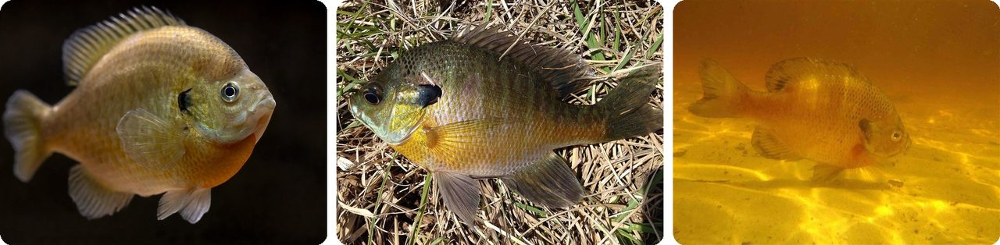
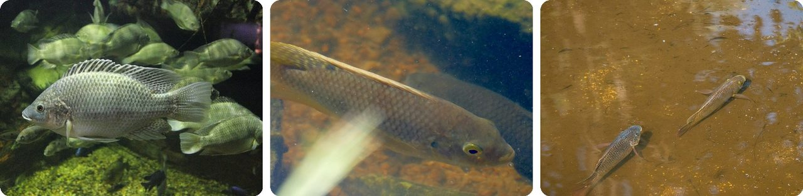
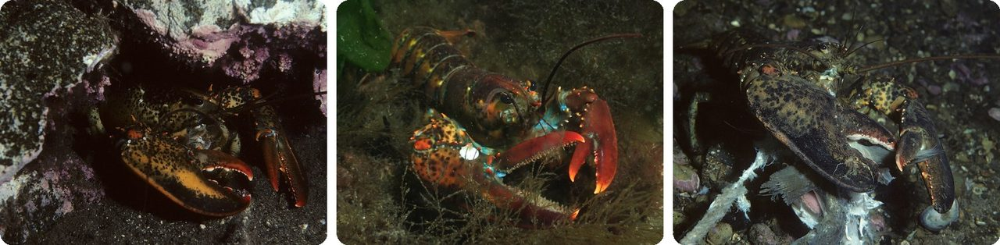
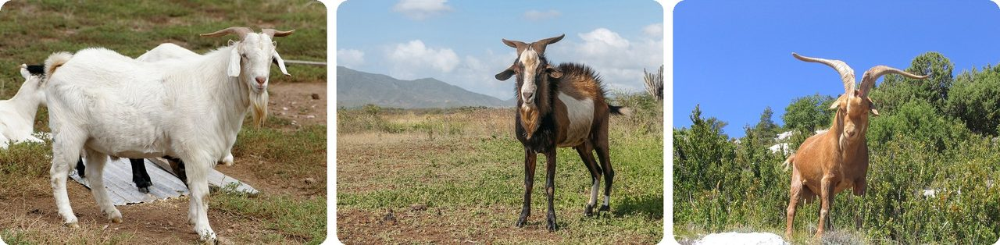
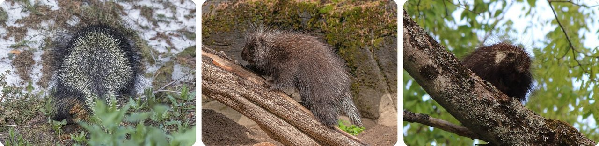
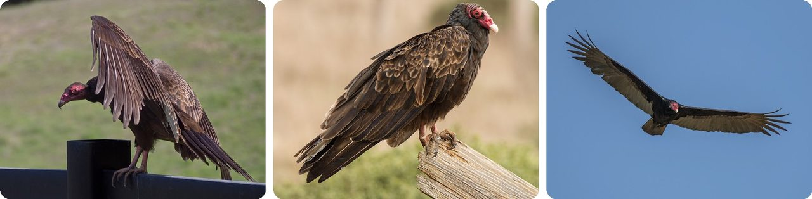
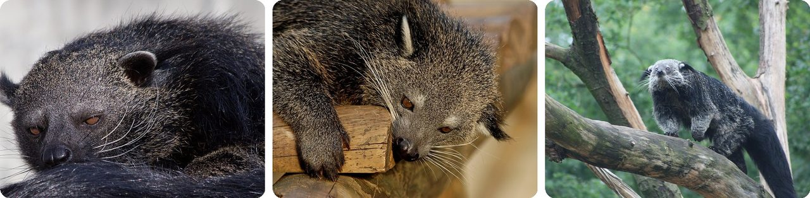
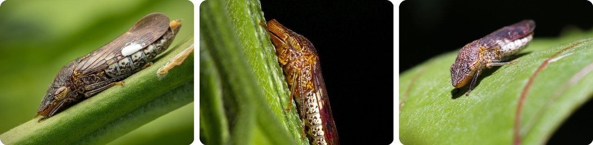
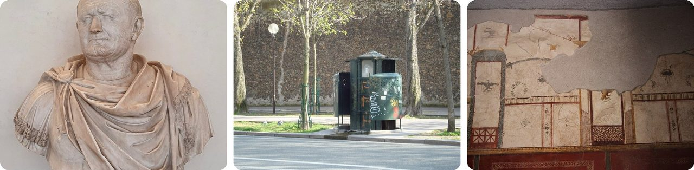
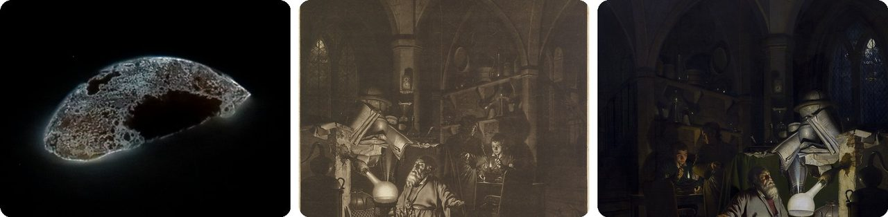

🌍 Top 10 Surprising Uses of Pee
Oct 16, 2026
1. 🐟 Bluegills pee all day because they live in fresh water

A bluegill's body is saltier than the lake it lives in. So water keeps soaking into the fish through its gills, all day long, the way a dry sponge soaks up a puddle.
If nothing stopped it, the fish would slowly fill up with water. Its kidneys fix that by making lots of very watery pee and pushing the extra water back out. Water seeps in → kidneys pump it out → repeat, nonstop.
That may be why anglers so often get a little squirt when they grab one: a bluegill is always busy making more.
Basically, a leaky boat that never stops bailing.
2. 🇲🇿 Boss tilapia fish fight with pee

Male Mozambique tilapia fish save up pee and use it as a message. In a 2007 study, top-ranked males held about 0.83 mL in their bladders, roughly twice as much as lower-ranked males.
When two rival males met, they peed about 10 times more often, in quick one-second squirts. But a male stopped peeing the moment he backed down and gave up.
Their noses could tell the difference, too: other tilapia responded much more strongly to the smell of a boss male's pee.
In other words, the boss carries the biggest water balloon.
3. 🦞 Lobsters pee from their heads

Lobsters don't keep their bladders where you'd expect. They have two of them, one on each side of the head, so their pee comes out up front, near the face.
That's not just plumbing. Lobsters "talk" with smells, and those smells travel in their pee. A squirt tells other lobsters who's there and where.
It's like sending a text by squirting from your cheeks.
4. 🐐 Billy goats pee on their own faces to look good

During mating season, a male goat (a buck) does something gross on purpose. He curls back his upper lip to sniff the air, then pees on his own front legs and face.
Scent glands at the base of his horns add their own strong smell. Together, that stinky mix is what makes him attractive to female goats.
Think of it as goat cologne.
5. 🌲 A porcupine proposal comes with a pee shower

North American porcupines live alone most of the year. In the fall, a female gives off a thick, smelly mix of mucus and pee that draws in nearby males.
The males compete, and the winner walks up and sprays pee all over her. That shower gets her ready to mate. Then, very carefully, both porcupines hold their quills flat so nobody gets stabbed.
So in porcupine world, getting peed on is the romantic part.
6. 🦅 Vultures cool off by peeing on their own legs

Turkey vultures and some storks don't sweat. On hot days, they squirt their droppings, which are pee and poop mixed together, straight onto their scaly legs.
As the liquid dries, it cools their legs, the same way sweat cools your skin. A scientist named this in 1963 "urohidrosis," Greek for "pee sweat." Some seals do the same thing, peeing on their back flippers while sunbathing.
It's sweating, but with pee.
7. 🌏 Binturongs smell like popcorn because of their pee

The binturong, or bearcat, is a shaggy tree-dweller from South and Southeast Asia that can be about 1.5 meters long counting its tail. People who meet one often say it smells like hot buttered popcorn.
That smell comes from its pee. Binturong pee contains a chemical called 2-AP, the same one that forms when popcorn pops.
When it drags its tail along a branch, it leaves pee mixed with an oily musk from glands under its tail. The oil makes the popcorn smell stick to the bark longer in the damp rainforest.
Basically, a walking movie theater.
8. 🦗 The sharpshooter bug flings its pee with a butt catapult

The glassy-winged sharpshooter is a little insect that drinks the watery sap inside plants. That sap is nearly all water, so it has to get rid of a huge amount: up to 300 times its own body weight every day. For a grown-up person, that would be more than 20 tonnes, about two school buses' worth.
Squirting all that would waste energy. Instead, it builds a drop on a tiny flicking part at its rear end and flings it away, launching the drop even faster than the flicking part itself moves. Scientists call this superpropulsion.
The falling drops are called "sharpshooter rain," and they leave a white crust on leaves and fruit.
It's a pee catapult.
9. 🇮🇹 Ancient Rome put a tax on pee

In ancient Rome, pee was valuable. Launderers used it as a source of ammonia to clean and whiten wool togas, and it was also used for tanning leather. So pee was collected from public urinals and sold.
Around 70 AD, Emperor Vespasian taxed it. When his son Titus complained that the tax was disgusting, Vespasian held up a gold coin and asked if it smelled bad. Titus said no. "Yet it comes from urine," his father replied.
That's where the saying pecunia non olet, "money doesn't stink," comes from. Public urinals in France are still called vespasiennes after him.
In other words, Rome got rich off pee.
10. 🇩🇪 An alchemist discovered a glowing element by boiling pee

In 1669, Hennig Brand of Hamburg, Germany, was trying to make gold. Like many alchemists, he thought the secret might be in pee, so he boiled it down and heated what was left until his glass vessel glowed red-hot.
Suddenly glowing fumes filled it and drops of liquid fell out and burst into flames. He caught the liquid in a jar, where it hardened and kept glowing a pale green. He had discovered the element phosphorus.
It took a lot of pee: about 5,700 liters, enough to fill around 30 bathtubs, to get just 120 grams of phosphorus, about the weight of a stick of butter.
Think of it as the world's grossest glow stick.
Fun fact
Saltwater fish have the opposite problem from bluegills. Their bodies are less salty than the sea, so water keeps leaking out through their gills, and they have to drink seawater all day long and get rid of the extra salt. Sharks even have a special gland near their rear end just for pushing out salt. Next time: the clever ways sea animals get rid of salt.
Photo credits (Wikimedia Commons)
- #1: Bluegill (Lepomis macrochirus) black background.jpg by USFWS Mountain Prairie, Public domain
- #1: Lepomis macrochirus UMFS 2014 2.JPG by Fredlyfish4, CC BY-SA 3.0
- #1: Bluegill fish lepomis macrochirus freshwater fish underwater in natural habitat.jpg by Tetzner Tom, U.S. Fish and Wildlife Service, Public domain
- #2: Oreochromis mossambicus.JPG by Greg Hume, CC BY-SA 3.0
- #2: Mozambique Tilapia (Oreochromis mossambicus) (flickr) by Bernard DUPONT, CC BY-SA 2.0
- #2: Oreochromis mossambicus Downfall Creek 7th Brigade Park Chermside P1140235.jpg by John Robert McPherson, CC0
- #3: American lobster, Homarus americanus in Newfoundland, Canada (21184223265).jpg by Derek Keats from Johannesburg, South Africa, CC BY 2.0
- #3: Homarus americanus · Beauchamp Point, Rockport, ME, USA by (c) Roger Rittmaster, some rights reserved (CC BY), CC BY
- #3: American lobster, Homarus americanus in Newfoundland, Canada (21173851982).jpg by Derek Keats from Johannesburg, South Africa, CC BY 2.0
- #4: Billy goat.jpg by User:Fir0002, CC BY-SA 3.0
- #4: Capra aegagrus hircus in isla Margarita.jpg by Wilfredor, CC0
- #4: Gorge du Verdon Goat 0254.jpg by Dirk Beyer, CC BY-SA 3.0
- #5: North American porcupine (Erethizon dorsatum nigrescens) Yoho 2.jpg by Charles J. Sharp, CC BY-SA 4.0
- #5: Erethizon dorsatum - Tierpark Hagenbeck 04.jpg by H. Zell, CC BY-SA 3.0
- #5: Erethizon dorsatum 202695809.jpg by webohms, CC BY 4.0
- #6: Turkey vultures (Cathartes aura) (01745)a.jpg by Rhododendrites, CC BY-SA 4.0
- #6: Cathartes aura at Tomales Bay.jpg by Frank Schulenburg, CC BY-SA 4.0
- #6: Turkey vulture (Cathartes aura) in flight.JPG by Charles J. Sharp, CC BY-SA 4.0
- #7: Arctictis binturong - 02.jpg by Carlos Delgado, CC BY-SA 3.0
- #7: Head arctictis binturong JdP.jpg by Jastrow, Public domain
- #7: Binturong 03.jpg by Mark van Seeters, CC BY 2.0
- #8: Homalodisca vitripennis - Glassy-winged sharpshooter (16283561424).jpg by Insects Unlocked, CC BY 2.0
- #8: Glassy-winged Sharpshooter (Cicadellidae, Homalodisca vitripennis) (27238799042).jpg by Insects Unlocked, CC0
- #8: Glassy-Winged Sharpshooter (Homalodisca vitripennis) (flickr) by siamesepuppy, CC BY 2.0
- #9: Bust with head of Vespasian-Uffizi.jpg by Yair Haklai, CC BY-SA 4.0
- #9: Vespasienne Arago.JPG by LPLT, CC BY-SA 3.0
- #9: Fullonica Stephanus Pompeya 01.jpg by Miguel Hermoso Cuesta, CC BY-SA 4.0
- #10: White phosphorus glowing e17.png by Endimion17, CC BY-SA 3.0
- #10: The Discovery of Phosphorus - DPLA - b587995cb665e51e0e5b83ab1bdd4893.jpg by Pether, William, Public domain
- #10: Joseph Wright of Derby The Alchemist.jpg by Joseph Wright of Derby, Public domain
_black_background.jpg){kind=link}


.jpg){kind=link}
.jpg){kind=link}


_Yoho_2.jpg){kind=link}


_(01745)a.jpg){kind=link}

_in_flight.JPG){kind=link}


.jpg){kind=link}
_(27238799042).jpg){kind=link}